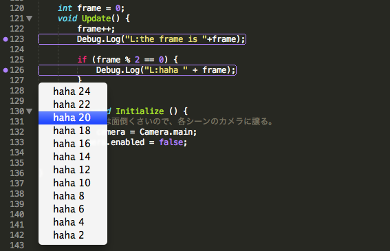

SublimeSocketAsset 1.7.0 準備中でパラメータ履歴の表示が俺の中で絶賛中
概要
これの
http://u3d.as/content/sassembla/sublime-socket-asset/4SP
最新アップデート版。
やっと形になってきた。まだ出せたわけじゃない。
ST3(beta)への対応が超アツい。
俺の中で。
追加機能一覧
パラメータ履歴の表示
ツールチップを使って、
同一箇所へのログの内容を表示できる。

何が凄いって、履歴ですよ履歴。単一箇所のログの履歴 = 値の変化の履歴！！！
ずっとこれが見たかった。
値の変化を、コードを通過するたびに蓄積させることができる。
いちいち「ログとにらめっこ」する必要がない。
バグ表示がステキになった
今までMacのNotifierとかを使っていたのだが、
あれはなにかの間違いだった。
現在エディタで開いてないErrorとかWarningのあるファイルを開くショートカット
これも欲しかった。
保存後、コンパイルが走るが、コンパイル中にエラーが発見され、そのエラーが存在するファイルがエディタで開かれていなかったら、
現在開いているファイルの一番上にトリガーを表示、押すと

こんな風にErrorとかWarningを含んでいて現在エディタで開いていないファイルと内容が表示されるようにした。
もちろん押すとファイルが開く。
エラー出てコンパイル止まる
→ どのファイルが原因かはUnityのログウィンドウ見ないとわからない
→ で、まだエディタで開いてない場合はダブルクリックしないと開かない
という地獄のような不便さから逃げ出したかった。
この辺、Unityのログ情報でコンパイル完了前に出力される情報が
Assets/以下のパスしかもっていないものだったので、しんどかった。
でもなんとかなった。SushiJSON凄い。
クイックフィックスが着いた
おまけ程度の機能しかないが、一応。

適応後。 ; がつく。

ほかにもquickfixの内容あるけどたぶんこれしか入らない。
こちらからは以上ですが
これらの機能を、Sublime Text 側になんの実装変更をすることもなく、
SushiJSONの記述だけでコントロールしているので、ほんと形になって良かったと思う。
これはUnity C♯に対してのSushiJSONでのエディタ機能実装だけれど、
ぶっちゃけ
どの言語に対してでも、SushiJSONでリアクターを書くことができ、
エディタの動作を定義できる。
SSAが一段落したら、Haxeのやつも公開せねば。